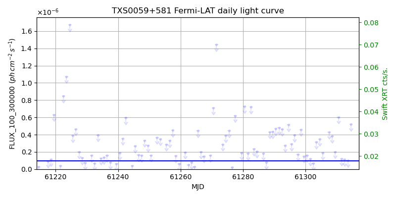
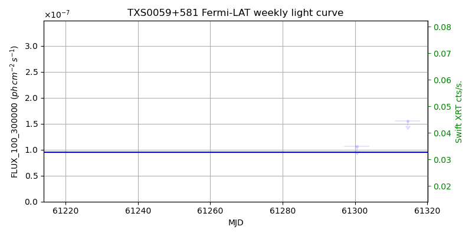
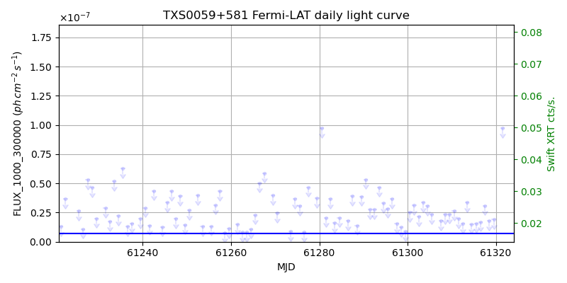
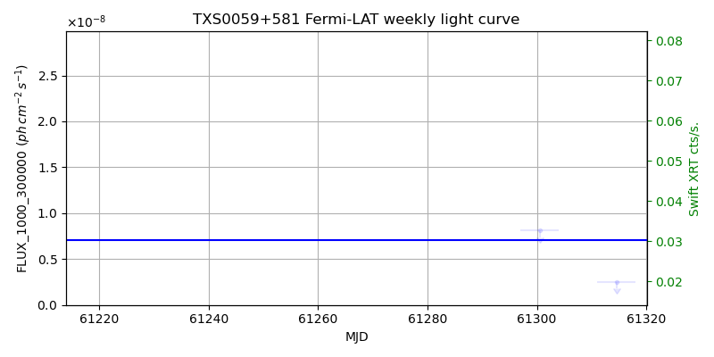

LAT Lightcurve site: https://fermi.gsfc.nasa.gov/ssc/data/access/lat/msl_lc/source/TXS_0059p581
Swift site: https://www.swift.psu.edu/monitoring/source.php?source=TXS0059+581
NED: Query
Time of last update of this page: UT: 2026-10-10 15:11 (MJD: 61323.633)
| Property | Value |
|---|---|
| R.A. | 1:02:45.84 |
| Dec. | 58:24:10.8 |
| z | 0.644 |
| 3FGL SpectrumType | LogParabola |
| 3FGL PL Index | |
| 3FGL Flux_100_300000 | 9.47e-08 1 / (s cm2) |
| 3FGL Flux_1000_300000 | 7.08e-09 1 / (s cm2) |
| 3FGL Flux >200 GeV | 3.25e-12 1 / (s cm2) |
| 3FGL Extrap. Crab >200 GeV | 0.01 |
| 3FGL Flux After EBL Absorption >200GeV | 2.99e-13 1 / (s cm2) |
| 3FGL EBL Crab Fraction >200GeV | 0.00 |

| MJD | dMJD | Flux | dFlux | Frac3FGL | FracCrab>200GeV | EBLFracCrab>200GeV |
|---|---|---|---|---|---|---|
| 61316.50 | 0.50 | 2.78e-07 | 0.00e+00 | 0.00 | 0.00 | 0.00 |
| 61317.50 | 0.50 | 3.56e-07 | 0.00e+00 | 0.00 | 0.00 | 0.00 |
| 61318.50 | 0.50 | 9.91e-08 | 0.00e+00 | 0.00 | 0.00 | 0.00 |
| 61319.50 | 0.50 | 4.70e-07 | 0.00e+00 | 0.00 | 0.00 | 0.00 |
| 61321.50 | 0.50 | 4.87e-07 | 0.00e+00 | 0.00 | 0.00 | 0.00 |

| MJD | dMJD | Flux | dFlux | Frac3FGL | FracCrab>200GeV | EBLFracCrab>200GeV |
|---|---|---|---|---|---|---|
| 61027.50 | 3.50 | 1.83e-07 | 0.00e+00 | 0.00 | 0.00 | 0.00 |
| 61041.50 | 3.50 | 2.42e-07 | 0.00e+00 | 0.00 | 0.00 | 0.00 |
| 61223.50 | 3.50 | 1.86e-06 | 0.00e+00 | 0.00 | 0.00 | 0.00 |
| 61300.50 | 3.50 | 1.06e-07 | 0.00e+00 | 0.00 | 0.00 | 0.00 |
| 61314.50 | 3.50 | 1.55e-07 | 0.00e+00 | 0.00 | 0.00 | 0.00 |

| MJD | dMJD | Flux | dFlux | Frac3FGL | FracCrab>200GeV | EBLFracCrab>200GeV |
|---|---|---|---|---|---|---|
| 61316.50 | 0.50 | 1.70e-08 | 0.00e+00 | 0.00 | 0.00 | 0.00 |
| 61317.50 | 0.50 | 3.10e-08 | 0.00e+00 | 0.00 | 0.00 | 0.00 |
| 61318.50 | 0.50 | 1.78e-08 | 0.00e+00 | 0.00 | 0.00 | 0.00 |
| 61319.50 | 0.50 | 1.90e-08 | 0.00e+00 | 0.00 | 0.00 | 0.00 |
| 61321.50 | 0.50 | 9.74e-08 | 0.00e+00 | 0.00 | 0.00 | 0.00 |

| MJD | dMJD | Flux | dFlux | Frac3FGL | FracCrab>200GeV | EBLFracCrab>200GeV |
|---|---|---|---|---|---|---|
| 61027.50 | 3.50 | 1.20e-08 | 0.00e+00 | 0.00 | 0.00 | 0.00 |
| 61041.50 | 3.50 | 2.67e-09 | 0.00e+00 | 0.00 | 0.00 | 0.00 |
| 61223.50 | 3.50 | 7.33e-07 | 0.00e+00 | 0.00 | 0.00 | 0.00 |
| 61300.50 | 3.50 | 8.11e-09 | 0.00e+00 | 0.00 | 0.00 | 0.00 |
| 61314.50 | 3.50 | 2.52e-09 | 0.00e+00 | 0.00 | 0.00 | 0.00 |
--------------------------------------------------------- Using user-supplied coords: 1:02:45.84 58:24:10.8 2000 --------------------------------------------------------- FLWO UT night of: 2026-10-11 Local Sid. @ Midnight: 00:55 Sunset (-15.0) (local, UT): 19:04 02:04 Sunrise (-15.0) (local, UT): 05:18 12:18 Moonrise (local, UT): Moonset (local, UT): Moon phase: 0.01 --------------------------------------------------------- AzTime LSID UT Obj_el Obj_az Mn_el Mn_az Sep. --------------------------------------------------------- 19:04 19:58 02:04 33.6 37.5 -16.1 264.2 134.6 19:34 20:29 02:34 37.5 37.8 -22.3 267.8 134.7 20:04 20:59 03:04 41.4 37.6 -28.5 271.5 134.8 20:34 21:29 03:34 45.3 36.7 -34.7 275.4 134.8 21:04 21:59 04:04 49.0 35.1 -40.8 279.7 134.9 21:34 22:29 04:34 52.6 32.5 -46.8 284.6 135.0 22:04 22:59 05:04 55.9 28.8 -52.7 290.5 135.1 22:34 23:29 05:34 58.7 23.8 -58.4 297.7 135.1 23:04 23:59 06:04 61.0 17.5 -63.6 307.3 135.2 23:34 00:29 06:34 62.5 9.8 -68.1 320.3 135.3 00:04 00:59 07:04 63.1 1.3 -71.3 338.2 135.4 00:34 01:29 07:34 62.8 352.7 -72.6 0.4 135.5 01:04 01:59 08:04 61.5 344.8 -71.5 22.7 135.5 01:34 02:30 08:34 59.5 338.0 -68.3 40.8 135.6 02:04 03:00 09:04 56.8 332.6 -63.9 54.1 135.7 02:34 03:30 09:34 53.6 328.5 -58.7 63.8 135.8 03:04 04:00 10:04 50.2 325.6 -53.1 71.2 135.9 03:34 04:30 10:34 46.4 323.7 -47.3 77.2 136.0 04:04 05:00 11:04 42.6 322.6 -41.4 82.2 136.1 04:34 05:30 11:34 38.7 322.2 -35.3 86.6 136.2 05:04 06:00 12:04 34.8 322.4 -29.2 90.6 136.2 05:18 06:14 12:18 33.0 322.6 -26.5 92.4 136.3 --------------------------------------------------------- Dark hours >55 deg.: 4.43 srcstart (UT): 2026-10-11 04:55 srcend (UT): 2026-10-11 09:21